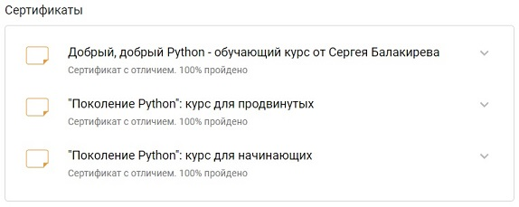

Andreev Anton
Contacts
E-mail: obsos32@gmail.com
Telegram: @anton_kim
RS School Discord server : Andreev Anton (@anton-kim)
LinkedIn
Brief about myself
Worked for a long time as a labor protection specialist, always actively engaged in automation of work processes
in Excel, Microsoft Access, etc. As a result, I decided to "let go" of this area and test myself in programming,
because the topic of IT in all its guises has always attracted my attention one way or another (3D modeling and
further rendering/video rendering, creating websites, flash videos, plug-ins for computer games, videos,
etc.).
Now almost any the industry cannot imagine itself without IT. For me it is important and close. Therefore, I
would like to become a part of the IT community.
I think my main soft skills are: a crazy sense of responsibility and a desire to automate processes.
Skills
- Python
- Django Framework
- Rest API
- Git, GitHub
- PyCharm
Code example
A function that returns the count of passed arguments (Python):
def args_count(*args, **kwargs):
return len(args) + len(kwargs)
Work experience
- Foodgram Project (Yandex Practicum)
- My Accounting Project
- Group YaMDb Project (Yandex Practicum)
Education and courses
- JavaScript Manual on learnjavascript.ru (in progress)
- RS School Course «JavaScript/Front-end. Stage 0» (in progress)
- Python courses on stepik.org
 - Python developer (Yandex Practicum, 2022)
- Professional Training Center (Moscow): courses on 3D MAX + Vray (2012)
Languages
- English - A2
- Russian - Native